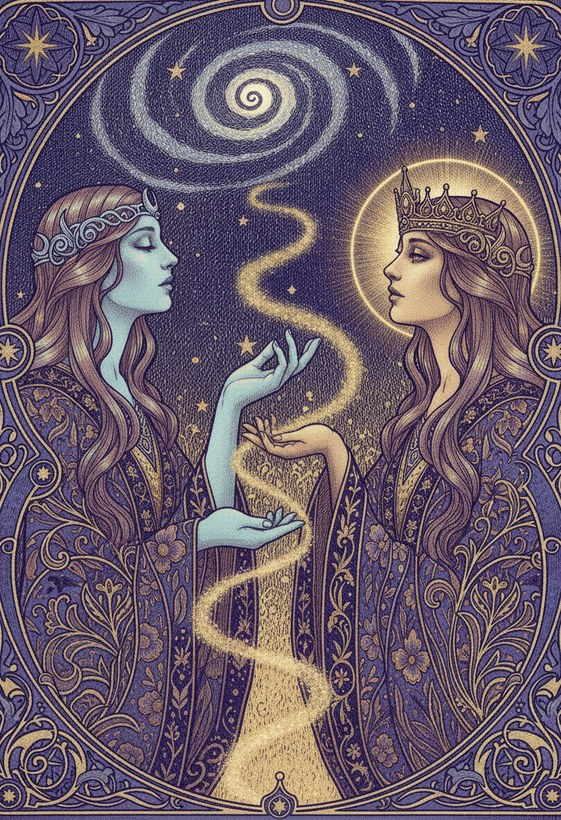

The reading, revealed
A reading is a conversation with someone who can see a little further than you can right now. Here is how it unfolds, from your first question to the clarity you carry home.
Three movements, one clarity
Every reading follows the same quiet arc. You arrive with a question, a guide is summoned to meet it, and the two of you connect.
You ask
You bring a question to the cosmos. Love, work, a crossroads, a person you cannot read. Naming it is the first turn of the key.
 IIThe Oracle
IIThe OracleA guide is summoned
We match you with a rigorously vetted psychic whose gift fits your question. Fewer than one in twenty applicants ever reach you.

IIIThe InsightYou see clearly
The reading resolves into something you can hold. Clarity arrives, and you leave knowing your next step, not just words you nodded along to.
Meet your psychic where you are
Choose the channel that feels natural. The gift comes through all three.
By phone
The oldest way, and still the most intimate. Just a voice, your question, and the space between. Available around the clock.
By chat
Type in quiet. Keep the transcript. For seekers who think in writing, or need to reach out from a room where no one can hear.
By video
Face to face across any distance. Read the expressions, feel the presence, meet your guide as if you shared a room.
Every reading begins the moment you dare to ask.
The question is already yours.
Only the answer is waiting. New members read from $1 per minute, backed by our satisfaction guarantee.
Find your psychicSatisfied or your money back. For entertainment. 18+.